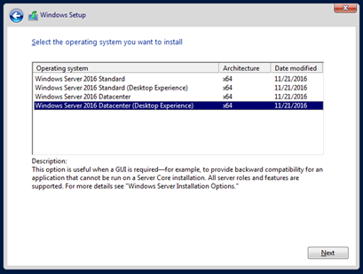
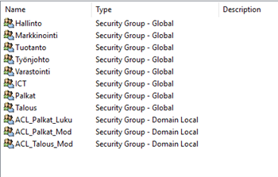
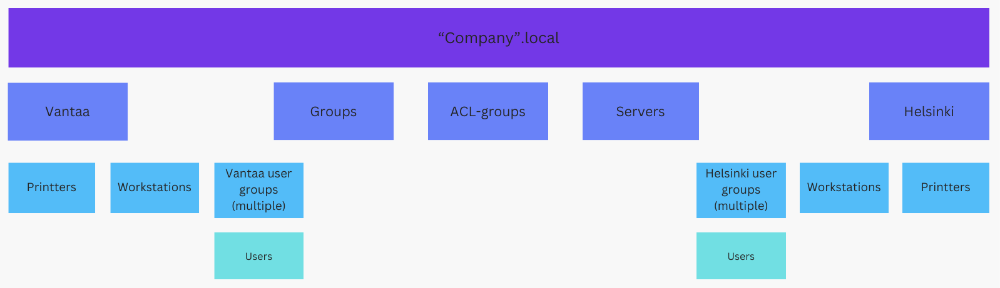
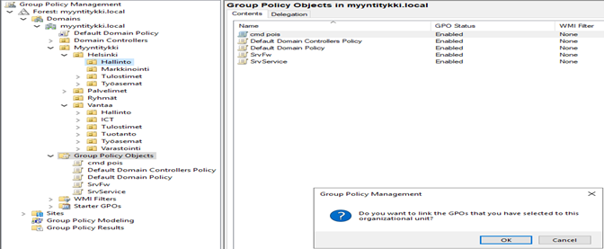
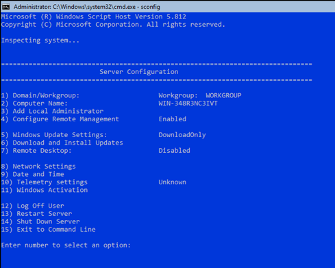

Degree Work

The assignment tasked me with planning, building, testing, and documenting an IT infrastructure for a fictional company. I created a marketing company with 11 employees operating from two offices. For servers, I utilized one Windows Server 2016 with a graphical user interface (GUI) and another without GUI. Workstations were equipped with Windows 10 Enterprise, which I configured using VMware virtualization. To streamline workstation installation, I developed a custom image and employed WDS (PXE-boot) for deployment.
This project served as a substitute for my final internship. The Original document has 144 pages, and it also includes more stuff about cybersecurity. In original document I also explain some key concepts about networking and cybersecurity in my own words. During this work I had some network related issues that turned to be some glitch on VMWare. I tried about every trick in the book (and internet) before reinstalling VMWare. Got 5/5 grade from this work, mainly because I handled so many issues during this work and had to learn new.
Servers used in this work
- ADDS
- DNS
- DHCP
- Backup
- Deployment server
- Windows Update server
- File Server Resource Manager
Active Directory
I made templates to make users and used ACL-groups and groups for managing user rights and access. I also delegated some admin rights for ICT and made two global admin users. I've heard that computers are usually in different place on AD, but I found that this way is simpler for managing group policies.
Group policies
I utilized group policies to implement drive mappings and restrict certain user rights. Additionally, I configured policies to prevent users from viewing the last logged-in user on the login screen, along with making auditing policy changes on the Default policy. Initially, I attempted to configure the core server firewall and services through GPO, but encountered limitations as these settings need to be established before the server can accept such commands.
Windows "core" server
 I initially expected this task to be straightforward since I could manage the server through management tools. However, I had to learn about configuring firewall settings and services using Power Shell first. On this server I used Diskpart for partitioning disks and smb-share on folders (which came obsolete when I managed to get server managing tools working). I also did some management using sconfig.
- © Untitled
- Design: HTML5 UP